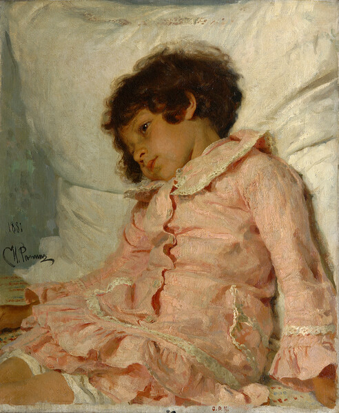

Репин Илья Ефимович
Портрет Нади Репиной
Портрет Нади Репиной или “Девочка в розовом” – визитная карточка Радищевского
музея. Это шедевр, известный многим. И понятно почему. Она очень жизненна и естественна. Девочка только проснулась.
Но ещё пребывает во власти сновидений. Её взгляд отрешён. Руки опущены. Картина написана в импресионистской манере.
Широкими мазками. В виде выхваченного “кадра” из повседневной жизни. Репин не был импрессионистом. И даже осуждал
их за пренебрежение деталями. Но видимо для такого сюжета только импрессионизм и подходил. Чтобы подчеркнуть
сиюминутность происходящего. Хотя на самом деле Репин работал над картиной долго. Его дочери пришлось не раз
попозировать. Не в самой удобной позе. Боголюбов в Париже всячески поддерживал молодых русских художников. В том
числе молодого Репина. Поэтому не удивительно, что тот выбрал Боголюбова крестным отцом Нади. А потом и подарил
портрет шестилетней девочки. Так картина вместе с остальной коллекцией Боголюбова и попала в Радищевский музей.